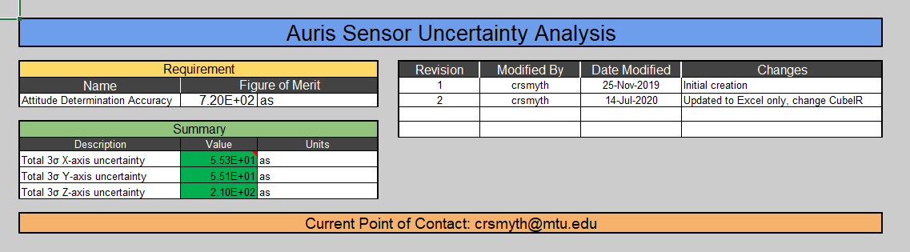
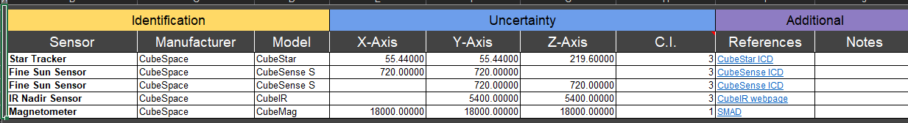

To check out this project, mess around with it, or potentially use it, go here on my GitHub.
As a attitude determination and control systems engineer, I have made several tools for easier verification of requirments. One of these is an Excel sheet for analyzing the uncertainty of sensors on the spacecraft. Specifically the attitude determination sensors. Built-in to this tool is uncertainty propogation of sensors that have angular uncertainty, or can be calculated to have angular uncertainty. Specifically the ones I created this for are the sensors on the Auris spacecraft: star trackers, fine sun sensors, and horizon sensors. As long as the uncertainty expressed is one that is angular uncertainty, there is no configuration needed to add a sensor.
This calculation is done with several assumptions:
For each axis measured by each sensor, a probability density function (PDF) is associated. This function is a Gaussian that has an average of zero, and a standard deviation equal to the uncertainty of the axis. This PDF has the form of:
Where is an angle away from the "true" value of the measurement, and is the relative likelyhood of that value being the output from the sensor. After these are associated with each sensors' axes, all of the PDFs along each axis of the spacecraft are multiplied together. This results in a total uncertainty along each axis, as when a Gaussian is multipled by a Gaussian, another Gaussian is produced. The produced Gaussian has an average of zero like the others but the standard deivation will be less than any of the others. This follows from the idea of sensor fusion, and if the sensor data is fused together properly, the overall measurement will have less uncerainty than any single sensor.
As it turns out, there is an easy way to calculate this. Rather than multiplying each PDF together and simplifying it, just summing the reciprocal of the variances will give the same result.
This was implemented in an Excel file that takes in the sensor properties and the system requirments. The output is the total uncertainty along each axis, and whether this meets the requirment or not based upon color. The real implementation of these statistics is done in the units of arseconds, as those are easier to compare the small angles that are being dealt with. There is also a column for inputting the confidence interval in the uncertainty. The confidence interval is very important, as without it there is no way to tell how confident the manufacturer is in their measurements. A confidence interval of 1 is equivalent to the standard deviation. To calculate the standard deviation from an uncertainty with a confidence interval of 3, just divide the value by three.
Another fun feature is the ability to freely change the displayed units on the dashboard page between many different units of angle.
Auris ADC System Sensor Uncertainty Dashboard
Auris ADC System Sensor Uncertainty Inputs